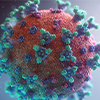

Cidade de SP vacina hoje pessoas de 48 anos contra o covid
By UOL
A cidade de SP vacina hoje a população de 48 anos contra a covid-19. Ao comparecer ao posto de vacinação, é nescassário um documento com foto, CPF e comprovante de residência com endereço no municio de SP.
5 comentarios
SP registra 3,63 milhões de casos e 123,8 mil óbitos por covid-19
By Estado SP
Entre o total de casos, 3.231.376 tiveram a doença e já estão recuperados, sendo que 382.287 foram internados e receberam alta hospitalar.
Hoje, há 22.129 pacientes internados em todo o território de SP, sendo 10.510 em unidades de Terapia Intensiva e 11.619 em enfermaria.
5 comentarios

Covid-19: Brasil ultrapassa Ìndia e volta a ser líder mundial em mortes diárias por coronavírus
By UOL
Em meio ao avanço de terceira onda da pandemia, o Brasil ultrapassau a Ìndia e voltou á liderança do número de mortes diárias por covid-19 registradas, em media. São mais de 2000 óbitos registrados por dia.
5 comentarios